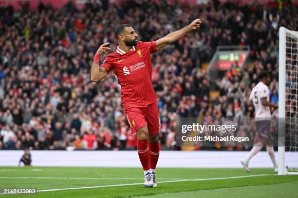
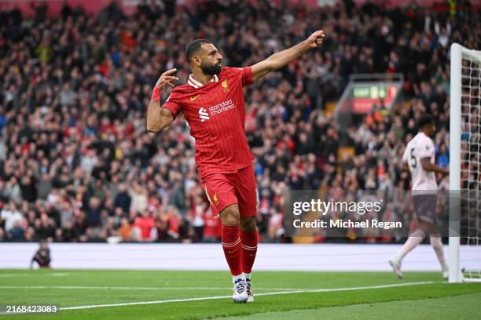

History of Liverpool FC
Founded in 1892, Liverpool Football Club is based in Liverpool, England. The club has won 19 English league titles, 8 League Cups, and a record 6 European Cups (now known as the UEFA Champions League).
Liverpool's anthem, "You'll Never Walk Alone", is famous worldwide and sung passionately by the fans at Anfield.

Trophies & Glory
Liverpool FC boasts a legendary trophy cabinet, including 6 European Cups, 19 league titles, and countless domestic honors.
View Achievements
Legendary Players
From Dalglish and Gerrard to Salah and Van Dijk — Liverpool's stars have shaped football history and inspired millions.
Meet the Legends
Arne Slot
Appointed in 2024, Arne Slot leads Liverpool into a new era of football, bringing tactical versatility and a winning mentality.
Meet the Squad
You'll Never Walk Alone
More than a song — it's the spirit of Liverpool. Sung before every match, it unites fans across generations.
Our AnthemAnfield Stadium
Anfield is the iconic home ground of Liverpool FC since its founding. It has a seating capacity of around 54,000. The stadium is famous for its electrifying atmosphere during matches.
_panorama_view_from_main_stand.jpg)
Famous Players
- Kenny Dalglish — Liverpool legend, player and manager
- Steven Gerrard — Club captain and midfield maestro
- Ian Rush — All-time leading goalscorer for Liverpool
- Mohamed Salah — Modern era goal machine
- Virgil van Dijk — World-class defender and captain
Trophies & Achievements
- 19 English League Titles (First Division & Premier League)
- 8 League Cups
- 6 UEFA Champions League Titles
- 3 UEFA Europa League / UEFA Cup Titles
- 15 FA Community Shields
- 1 FIFA Club World Cup
Gallery
 

Photos courtesy Wikimedia Commons / Creative Commons
Contact
For official information and tickets, visit the Liverpool FC official website.